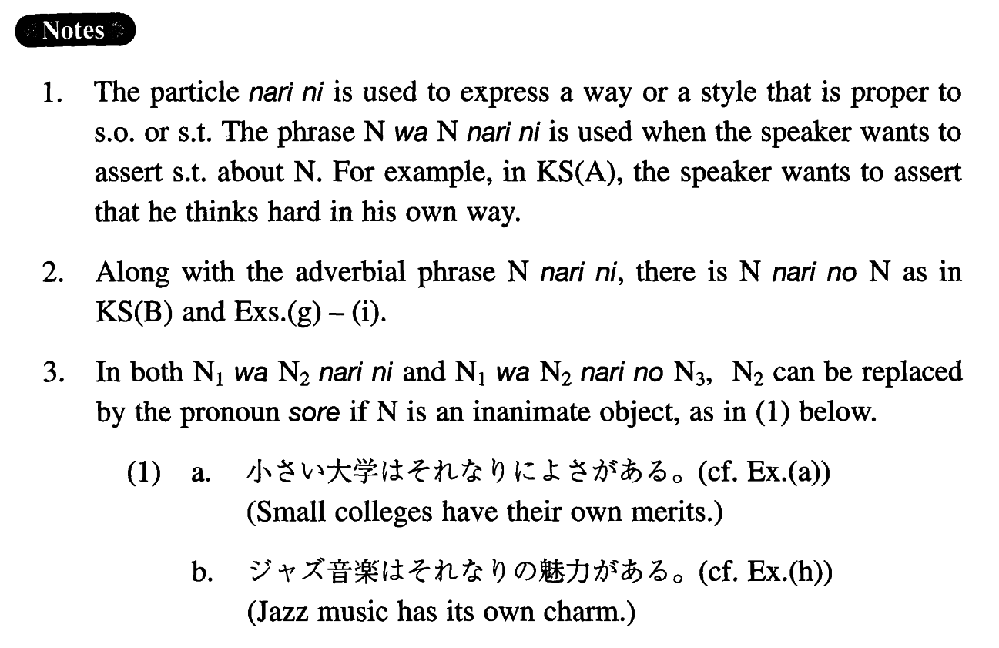

←
DoJG
→
なりに
(I. 227)
Example sentences
(ksa).
あの人はあの人
なりに
よく考えているらしい。
He appears to think hard in his own way.
(ksb).
動物は動物
なりの
コミュニケーションが出来る。
Animals are capable of their own communication.
(a).
小さい大学は小さい大学
なりに
よさがある。
Small colleges have their own merits.
(b).
私は私
なりに
、人生観を持っています。
I have my own outlook on life.
(c).
自転車は自転車
なりに
、車は車
なりに
、長所、短所がある。
A bike and a car have their own merits and demerits.
(d).
健康な人は健康な人
なりに
、体に気をつけた方がいい。
Healthy people had better take care of themselves in their own way.
(e).
私は老人が老人
なりに
生活を楽しめる社会が好きだ。
I like a society in which old people can enjoy life in their own way.
(f).
私は私
なりに
一生懸命働くつもりです。
I intend to work very hard in my own way.
(g).
この問題について、父は父
なりの
考えを持っているようです。
My father seems to have his own idea about this issue.
(h).
ジャズ音楽はジャズ音楽
なりの
魅力がある。
Jazz music has its own charm
(i).
金持ちは金持ち
なりの
悩みがあるのだ。
Rich people have their own suffering.
Formation
(i)
Noun
1
はNoun
2
なりに
Where Noun
1
=Noun
2
学生は学生
なりに
Students ~ in their own way
(ii)
Noun
1
はNoun
2
なりの
Noun
3
Where Noun
1
=Noun
2
先生
なりの
考え
Teachers’ own idea
